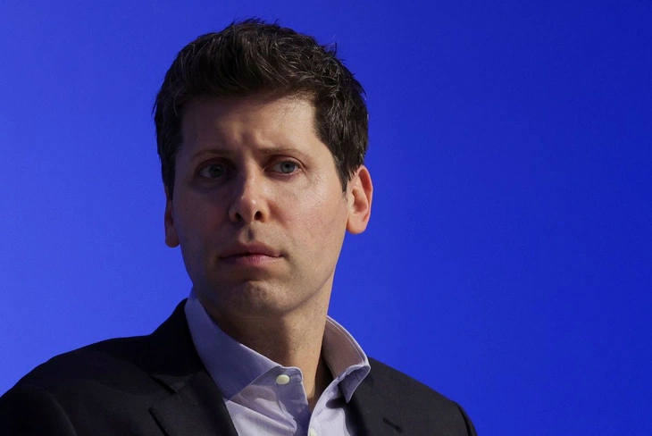

Just one day after being fired, OpenAI is negotiating to invite the 'father' of ChatGPT to return to work.
The leadership of OpenAI is seeking to invite former CEO Sam Altman back to work, despite having just dismissed him the day before.

Former OpenAI CEO, Mr. Sam Altman.
According to Reuters, the "father" of ChatGPT, Sam Altman, is reportedly in discussions with OpenAI about the possibility of returning to work at the company. OpenAI had previously shocked the artificial intelligence (AI) technology industry by announcing Altman's dismissal on November 18th.
OpenAI explained that they lacked trust in Mr. Altman and believed that new leadership was needed to drive the company's development further. However, in the latest move, the leaders of the company are seeking ways to reinstate the position for the creator of the ChatGPT tool.
After being dismissed, Mr. Altman engaged in discussions with OpenAI's executives about improving the management structure. The former CEO simultaneously consulted with some core scientists of the company and those loyal to him about the idea of establishing a new artificial intelligence company.

OpenAI's Altman attends the APEC conference in the U.S..
OpenAI's investors, including Microsoft, are concerned that the company's talent might "migrate" in large numbers due to the absence of Mr. Altman, so they are actively seeking ways to mitigate the damage.
Investors are exerting pressure on the board to reinstate the CEO position for the 38-year-old tech entrepreneur.
Mr. Vinod Khosla, the founder of the technology startup support fund Khosla Ventures, posted on Twitter expressing his desire for Mr. Altman to return to OpenAI. However, Mr. Khosla mentioned that he would continue to support the former CEO even if the "father" of ChatGPT chose a different path.
Reuters reports that current and former OpenAI employees are extremely upset upon learning of Mr. Altman's dismissal. Some are even so shocked that they are considering resigning if Mr. Altman does not return by the end of the week.
The sudden dismissal of CEO Sam Altman by OpenAI is believed to have a significant impact on the upcoming $86 billion stock sale. According to official reports, Microsoft owns 49% of the company, while investors and employees control 49%. Only the remaining 2% is under the ownership of OpenAI.